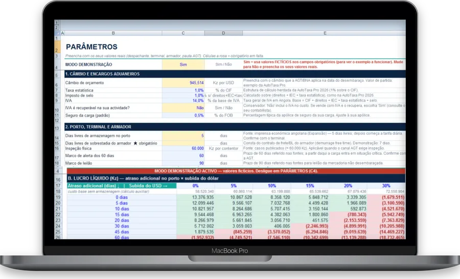
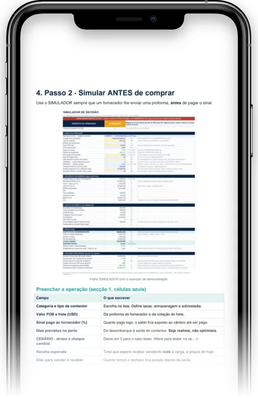
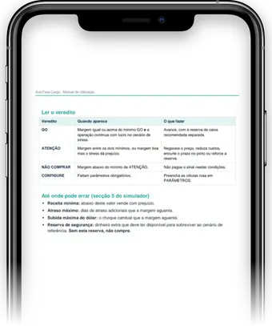
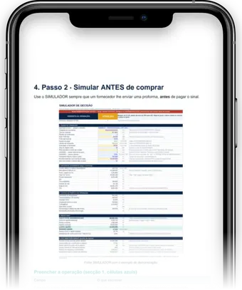
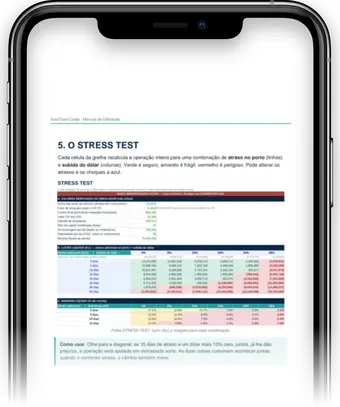
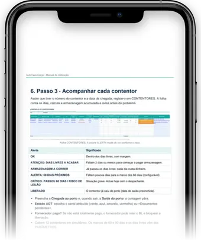
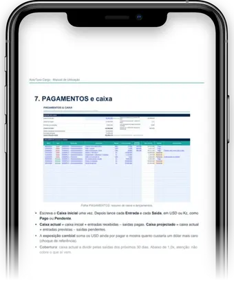
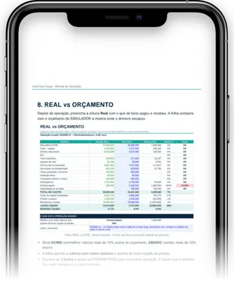
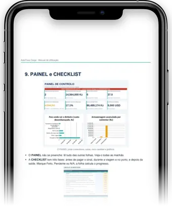

Saiba se o seu contentor dá lucro ou prejuízo antes de pagar o sinal ao fornecedor
Dólar a subir, dias a mais no porto, armazenagem a acumular: veja o impacto em Kwanzas antes de comprar.
QUERO A AUTOTAXA CARGO POR 21.997 KzEntrega imediata no seu email · Pagamento seguro✔Garantia de 7 dias✔Suporte no WhatsApp✔Entrega imediata

Exemplo calculado pela planilha: 1 contentor de 40' de electrodomésticos, câmbio 945,51 Kz.
O veredito, antes de pagar o sinal
Preencha a proforma do fornecedor e a planilha diz-lhe GO, ATENÇÃO ou NÃO COMPRAR.

- Veredito GO / ATENÇÃO / NÃO COMPRAR, com as suas regras de margem mínima.
- Stress test: atraso no porto e subida do dólar, cada combinação em Kwanzas.
- Custo total desembaraçado: direitos, IVA, despachante, taxas do porto e armazenagem.
- Controlo de contentores com alerta antes de acabarem os dias livres.
- Caixa e pagamentos, com a exposição ao câmbio e o real vs orçamento.
Veja a planilha por dentro
Mais de 10 folhas – Do simulador ao controlo de cada contentor.







Deslize para o lado para ver mais →
O Veredito dos Importadores
Mensagens reais de clientes no WhatsApp.
Deslize para o lado para ver mais →
Perguntas frequentes
Os valores são exatos?
A planilha calcula com os dados que você introduz (câmbio, taxas, tarifas do despachante, do terminal e do armador) e dá-lhe uma estimativa. O valor final pode variar por reavaliação aduaneira ou câmbio aplicado, por isso confirme com o seu despachante antes de pagar o sinal. Não garantimos lucro nem resultados de negócio.
Serve para que tipo de mercadoria?
Para qualquer carga em contentor, de 20' ou 40': electrodomésticos, electrónicos, peças, roupa e outras. Você escolhe a categoria e o tipo de contentor, e pode renomeá-los.
Preciso de saber Excel?
Não. Você só preenche as células azuis e a planilha calcula o resto. Vem com manual de utilização em PDF, passo a passo, e um checklist do importador.
Em que programa funciona?
Abre no Excel, no computador ou no telemóvel.
E se as taxas ou o câmbio mudarem?
Basta atualizar os valores na folha PARÂMETROS e tudo é recalculado. Você configura uma vez e ajusta quando as tarifas mudarem.
Como recebo depois de pagar?
O acesso é digital e imediato, enviado para o email ou contacto indicado no checkout. Se tiver qualquer dificuldade, fale connosco no WhatsApp.
E se eu não gostar?
Tem 7 dias para pedir o reembolso integral, sem precisar de explicar o motivo, pelo WhatsApp ou por email.
AutoTaxa Cargo
- Planilha AutoTaxa Cargo • 11 folhas: simulador, stress test, contentores, orçamento e muito mais
- Manual de utilização em PDF
- Checklist do importador
- Suporte no WhatsApp
100% dinheiro de volta em 7 dias. Se não for para si, devolvemos o valor total, sem perguntas.
100% dinheiro de volta · 7 dias garantido